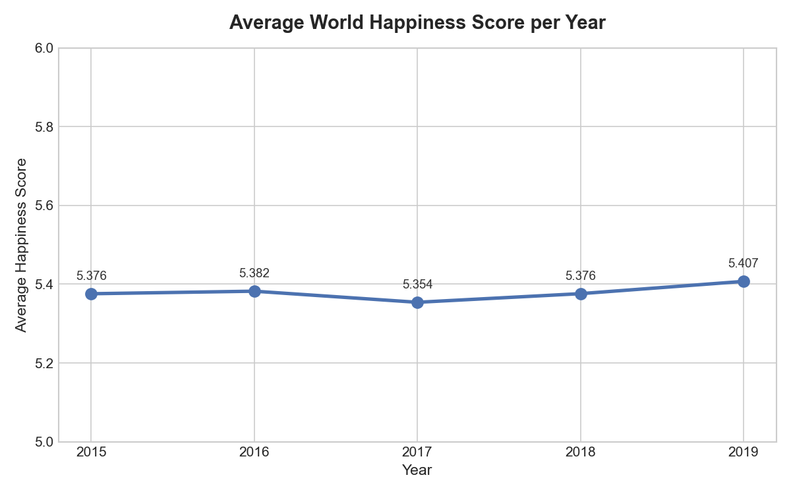
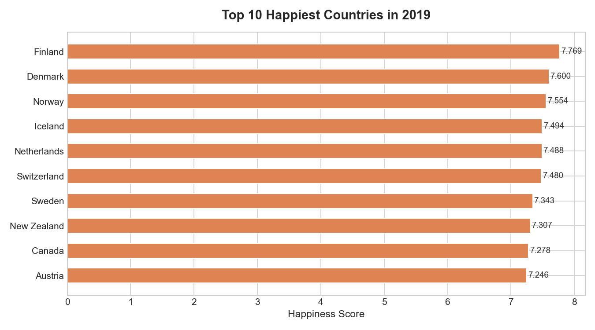
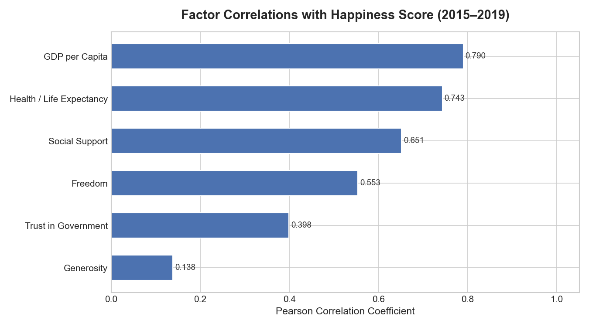
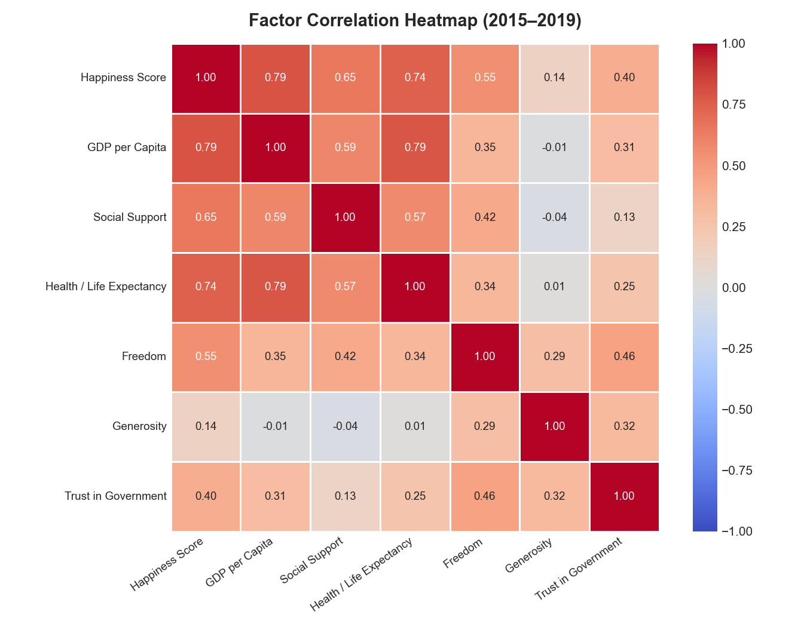
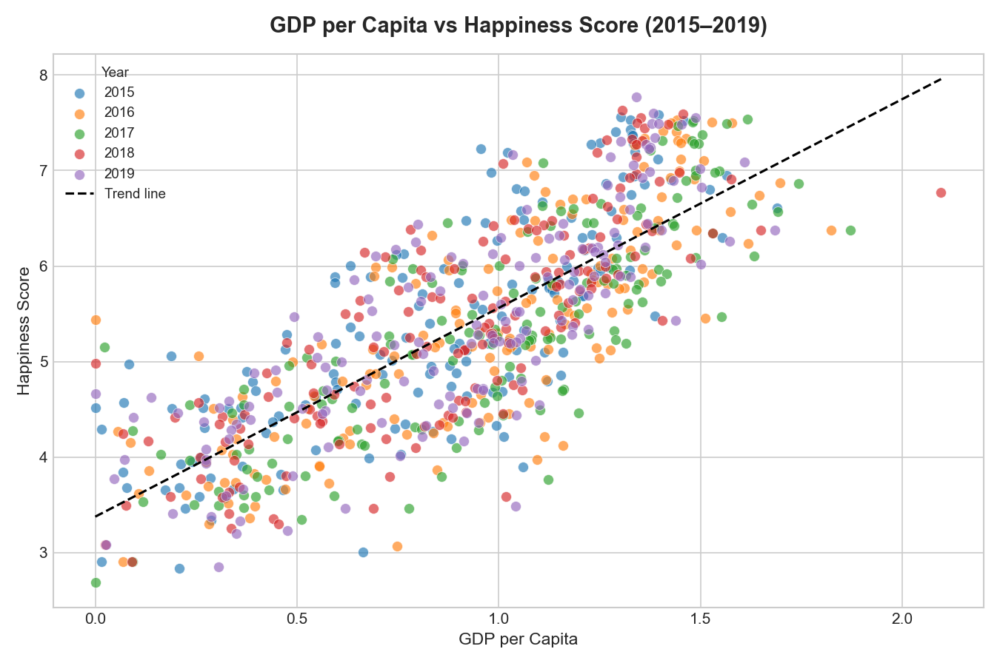
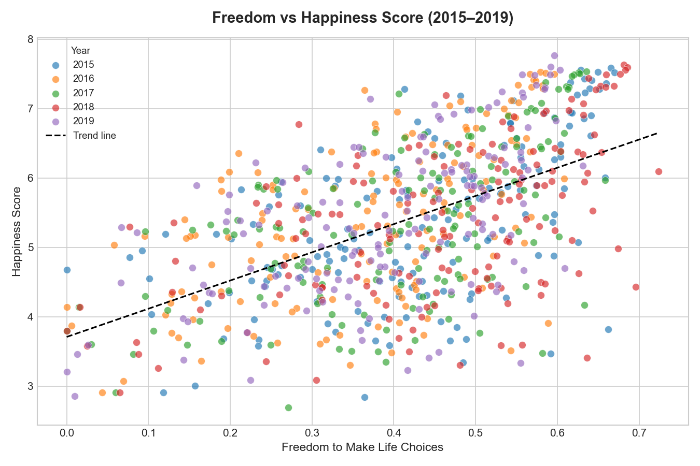

Data Analysis Project
Using the World Happiness Report datasets from 2015 to 2019, this project explores which factors drive national happiness, how scores have shifted over time, and whether wealth reliably predicts wellbeing across 155+ countries. Data was cleaned, standardised, and analysed using Python (pandas, matplotlib, seaborn).
Section 01
Average happiness scores were computed for each year across all surveyed countries. The trend line shows whether global wellbeing has improved, declined, or held steady over the five-year window.

Fig 1 — Average world happiness score by year (2015–2019)
Section 02
The ten countries with the highest happiness scores in 2019. Northern European nations dominate the top of the list, pointing to the outsized role of social infrastructure and trust in government.

Fig 2 — Top 10 happiest countries by score, 2019
Section 03
Six contributing factors were compared against happiness scores using Pearson correlation. Scatter plots reveal the relationship between wealth and happiness, and between personal freedom and happiness. The heatmap shows how all factors relate to one another.

Fig 3 — Correlation of each factor with happiness score

Fig 4 — Full correlation heatmap across all factors

Fig 5 — GDP per capita vs happiness score

Fig 6 — Freedom to make life choices vs happiness score
Section 04
Finding 01
Wealth and health predict happiness more than anything else
GDP per capita (r = 0.79) and health/life expectancy (r = 0.74) are the two strongest correlates of national happiness — by a clear margin. Social support comes third (r = 0.65). Generosity, by contrast, has almost no predictive power (r = 0.14): people in happy countries aren't necessarily more charitable, they're simply wealthier, healthier, and more supported.
Finding 02
Global happiness has barely moved in five years
The worldwide average happiness score rose just 0.031 points between 2015 and 2019 — an increase of less than 1%. There was a small dip in 2017, followed by a recovery to the highest recorded average in 2019 (5.407). Despite dramatic global events over this period, aggregate wellbeing proved remarkably stable.
Finding 03
Being rich does not mean being happy
In every year from 2015 to 2019, only 2 out of the 10 wealthiest countries (by GDP per capita) also appeared in the top 10 happiest — Norway and Switzerland. Gulf states such as Qatar, Kuwait, and the UAE rank among the world's richest nations but consistently fall outside the happiness top 10. Meanwhile, Finland, Denmark, and Iceland are among the happiest countries despite not topping the GDP table, suggesting that equality, trust, and social cohesion matter as much as raw economic output.
Finding 04
Australia, New Zealand, and North America lead by region
Across the years for which regional data was available (2015–2016), Australia and New Zealand ranked as the happiest region on average (rank 9.0), followed closely by North America (rank 9.8) and Western Europe (rank 29.4). Sub-Saharan Africa ranked last at an average position of 128.8 — a gap that reflects deep disparities in wealth, health infrastructure, and institutional trust.